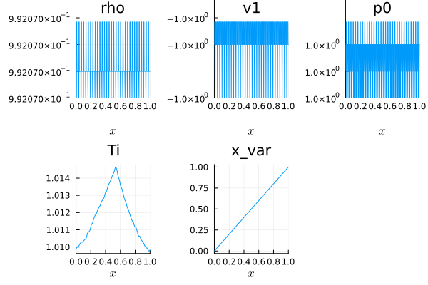
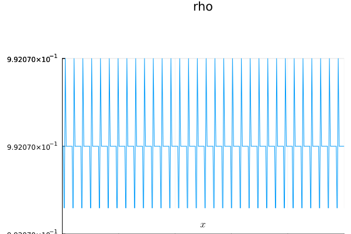
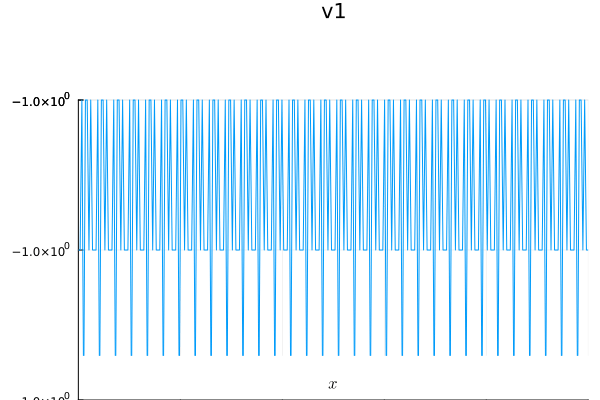
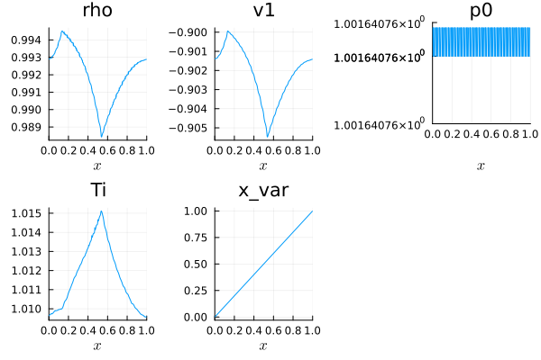

Tutorial for the 1D Model
In this section, we describe how to use TermiteMoundInducedAirflowTrixi.jl with Trixi.jl. This tutorial will guide you through setting up and running a 1D airflow simulation, including mesh creation, boundary conditions, numerical fluxes, and visualization of results.
Packages
Before starting, ensure that the required packages are loaded:
using Pkg
Pkg.add(["TermiteMoundInducedAirflowTrixi", "Trixi", "Trixi2Vtk",
"OrdinaryDiffEqLowStorageRK", "Interpolations", "QuadGK",
"FastGaussQuadrature", "Plots"])
using TermiteMoundInducedAirflowTrixi,
Trixi,
Trixi2Vtk,
OrdinaryDiffEqLowStorageRK,
Interpolations,
QuadGK,
FastGaussQuadrature,
PlotsImport Functions
Next, we need to load some functions:
using Trixi: AbstractEquations, @muladd
import Interpolations: Line
import Trixi:
flux_ranocha,
ln_mean,
inv_ln_mean,
flux,
varnames,
cons2cons,
cons2prim,
prim2cons,
cons2entropy,
max_abs_speeds
import TermiteMoundInducedAirflowTrixi:
TermiteMoundInitialCondition, source_terms,
termite_parametersEquations
First, we need to choose the parameter values for our model. The function termite_parameters(r,h) generates all required parameters given a radius r and height h:
radius = 0.6;
height = 2.0;
(γ, k_i, k_w, tᵣ, uᵣ, xa, xb, xc, r, h, L, β, η, Fr², ρₕ₀, T_ref, t_ref, T0, v0, Ti_LI) =
termite_parameters(radius, height);
equations = TermiteMoundEquations1D(; γ, k_i, k_w, tᵣ, uᵣ, xa, xb, xc, r, h,
L, β, η, Fr², ρₕ₀, T_ref, t_ref, T0, v0, Ti_LI);Initial state and flux functions
Next, we set the initial state, volume flux and surface flux functions in our equation system:
initial_condition = TermiteMoundInitialCondition;
volume_flux = flux_ranocha;
surface_flux = flux_ranocha;Semidiscretization
The polynomial degree for the DGSEM can be specified now:
dg = DGSEM(
polydeg = 4,
surface_flux = flux_ranocha,
volume_integral = VolumeIntegralFluxDifferencing(volume_flux),
);We define a one-dimensional Tree mesh, which discretizes the (scaled) spatial domain:
mesh = TreeMesh(
(0.0,),
(1.0,),
initial_refinement_level = 5,
n_cells_max = 1000,
periodicity = true,
);The semidiscretization is now defined:
semi = SemidiscretizationHyperbolic(
mesh,
equations,
initial_condition,
dg,
source_terms = source_terms,
boundary_conditions = boundary_condition_periodic,
);Solvers and callbacks
We want to simulate a full day. In this case we set the time span to:
tspan = (0.0, 1.0) .* 86400 ./ equations.tᵣ;
ode = semidiscretize(semi, tspan);For time integrations we will always use the CarpenterKennedy2N54 algorithim. Therefore, the UpdateVelocityCallback is defined as:
update_velocity_callback =
UpdateVelocityCallback(CarpenterKennedy2N54(williamson_condition = false));We add a Summary, Stepsize and AMRCallback to complete our callback set:
summary_callback = SummaryCallback();
stepsize_callback = StepsizeCallback(cfl = 0.3);
amr_controller = ControllerThreeLevel(
semi,
IndicatorMax(semi, variable = (u, equations) -> u[2]),
base_level = 5,
max_level = 6,
max_threshold = -0.35,
);
amr_callback = AMRCallback(
semi,
amr_controller,
interval = 1,
adapt_initial_condition = true,
adapt_initial_condition_only_refine = true,
);
callbacks = CallbackSet(summary_callback, stepsize_callback, update_velocity_callback);Run the simulation
Finally, we can solve the sysstem of equations. We save our solution across multiple points in time.
sol = solve(
ode,
CarpenterKennedy2N54(williamson_condition = false);
dt = 1.0,
ode_default_options()...,
saveat = (tspan[end]-tspan[1])/24/2,
callback = callbacks,
);Solution plots
Our simulation started with a constant initial state of rhoand v1. The leading order pressure is always constant in x. We can plot the initial state of our flow quanities using:
pd_init = PlotData1D((x, equations) -> initial_condition(x, last(tspan), equations), semi);
plot(pd_init)
The time evolution of the density can be visualized using:
anim_rho = @animate for i ∈ 1:length(sol.t)
pd_rho = PlotData1D(sol.u[i], semi)
plot(pd_rho["rho"])
end
gif(anim_rho, "rho.gif", fps = 5)
The velocity behaviour can be ploted similarly:
anim_v = @animate for i ∈ 1:length(sol.t)
pd_v = PlotData1D(sol.u[i], semi)
plot(pd_v["v1"])
end
gif(anim_v, "v.gif", fps = 5)
The final state of the system variables can be visualized via:
pd = PlotData1D(sol)
plot(pd)